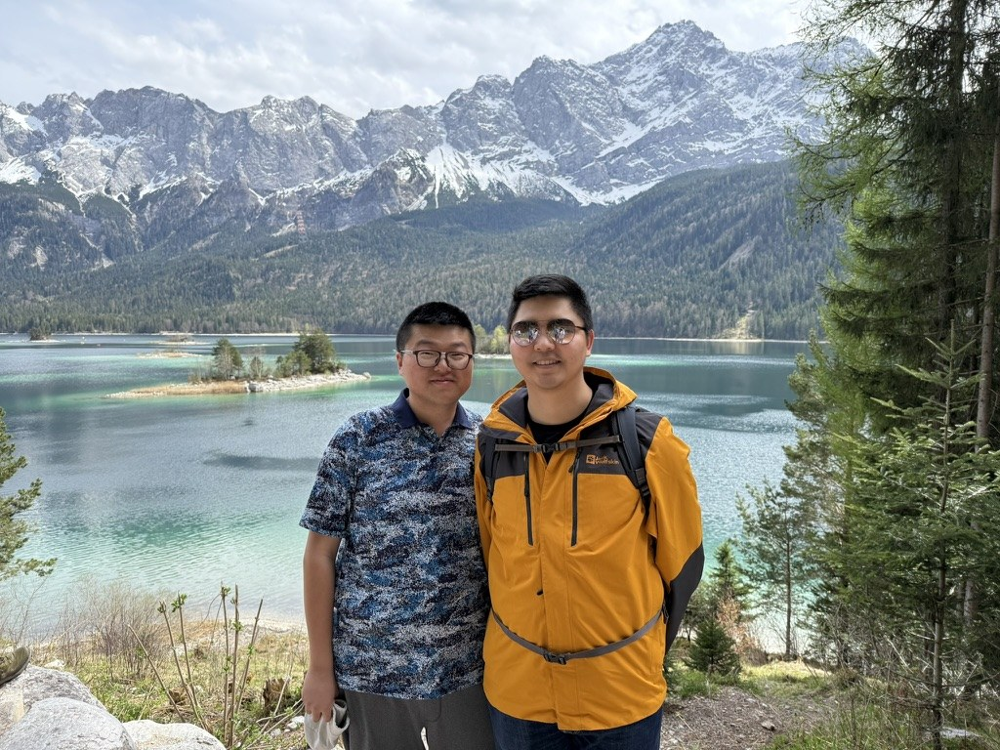
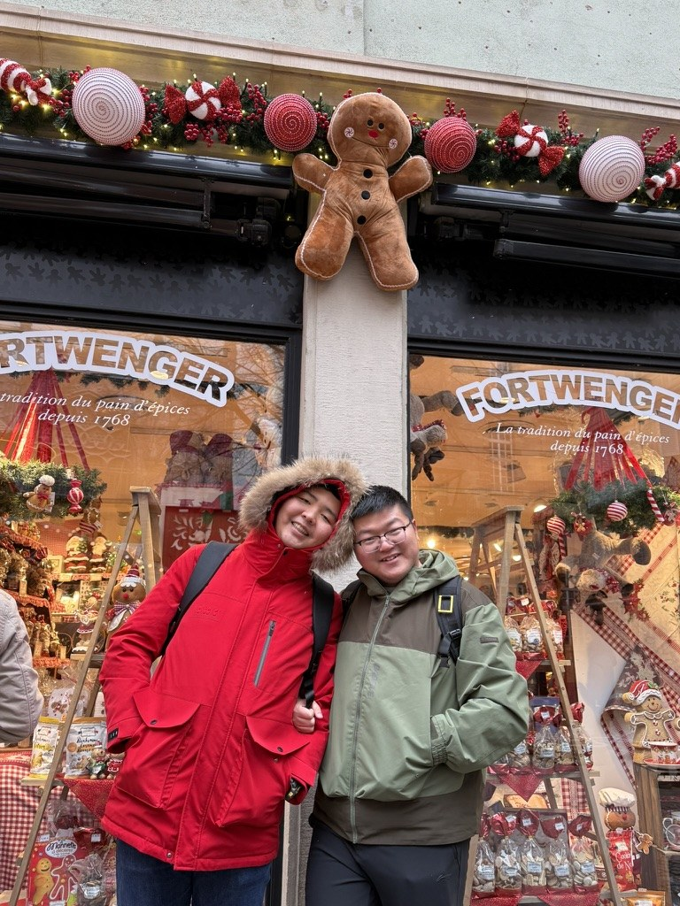

- 婚礼日期
- 待确认
- 婚礼场地
- 待确认
THE ALBUM
相册
慕尼黑奥林匹克塔，德国 
慕尼黑啤酒节，德国 Königssee（国王湖），德国 巴黎，法国 
厦门，中国 
毕棚沟，四川，中国 
科莫湖，意大利 
旧金山，美国 
乔治城大学，华盛顿特区，美国 
纽约布鲁克林大桥，美国 纽约，美国 
Dauernheim，德国 
龙疆湖，瑞士 
Zillertal Arena，奥地利 
奥格斯堡圣诞市场，德国 格拉纳达，西班牙 
龙达，西班牙 
芭提雅，泰国 
清迈，泰国 
昂蒂布，法国 索尔登，奥地利 
Eibsee，德国 
托斯卡纳，意大利 
托斯卡纳，意大利 佛罗伦萨，意大利 
Ellmau 圣诞市场，奥地利 
Mayrhofen，奥地利 
斯特拉斯堡，法国 
巴塞罗那，西班牙 
瓦伦西亚，西班牙 
瓦伦西亚，西班牙 
威尼斯，意大利 
Lago di Braies，意大利 多洛米蒂，意大利 
Sønderborg，丹麦 去市政厅的路上 · 丹麦 Aabenraa，丹麦 
Aabenraa，丹麦 
Fügen，奥地利 Gnadenwald，奥地利 Gnadenwald，奥地利 Gnadenwald，奥地利
KINDLY REPLY
出席回执
婚期和场地仍在筹备中。你可以先告诉我们你的出席意向。
常见问题
现在还不能确定是否出席，怎么办？
可以在回执中选择「待定」。
什么时候能看到交通和婚礼流程？
等场地和时间确认后，我们会补充地址、到达方式和当日安排。